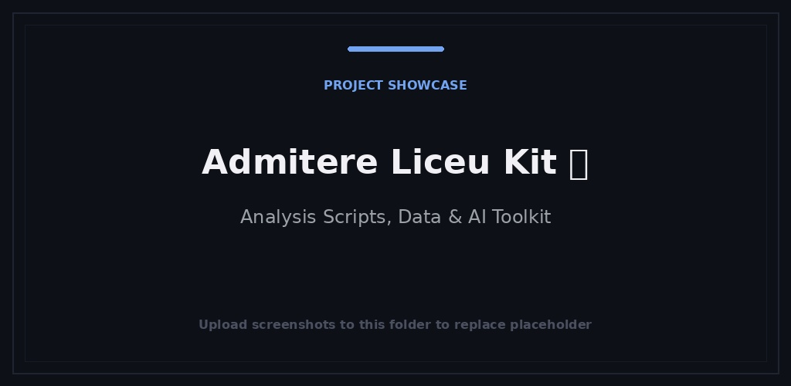

Ferramentas do dia a dia
Bitey
Fotografe a refeição, ajuste a porção e mantenha um diário alimentar com a ajuda do Bitey.
Explore o histórico de admissões e simule escolhas de escolas de ensino médio em Bucareste.

Guias em romeno, planilhas sintéticas, agregados históricos e scripts Python opcionais para organizar as opções de admissão no ensino médio em Bucareste.
Baixe e extraia o ZIP e abra START.html no seu navegador. Os guias e planilhas não precisam de programação. Mantenha registros pessoais locais; as planilhas não são formulários oficiais de inscrição.
Limite da edição 2026-10-21.1: o histórico do BAC foi reconstruído a partir de tabelas públicas do PlusEdu, com uma página de origem para cada escola. Abrange apenas 82 escolas e a fonte pode rever os seus números. O PDF e XLSX originais permanecem excluídos; verificar os documentos atuais do Ministério e do ISMB.
Fotografe a refeição, ajuste a porção e mantenha um diário alimentar com a ajuda do Bitey.

Uma pequena peça que ajuda aplicativos web a funcionar offline e ficar atualizados.

Um pequeno console para gerenciar convites e dispositivos em aplicativos web privados.